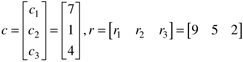
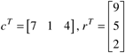
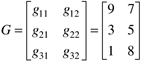
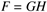
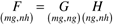
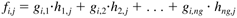
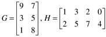
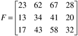

M1.2 Matrix Operations
Matrix Notation Review
Matrices are ordered arrays of one or more dimensions. A one-dimensional matrix that can be either a column or a row is known as a vector. In this text, we normally use subscripts to denote the element numbers. Consider the following vectors of length 3, where c is a column vector and r is a row vector.

Transposing each vector results in the following, where the superscript 'T' represents a transpose:

A 3 x 2 matrix has three rows and two columns, as shown by the matrix G:

Notice that the ij subscript refers to the element in the ith row and jth column.
Dimensional consistency is very important in matrix operations. Consider the matrix operation

To be dimensionally consistent, the number of columns in G must be equal to the number of rows in H. When considering matrix multiplication, it is convenient to write the dimensions underneath the matrices. For a G matrix with mg rows and ng columns, and an H matrix with nh columns, then the rest of the dimensions must be

The ijth element of F is found in the following fashion:

For the following F and G matrices,

you should be able to calculate that

MATLAB Matrix Operations
The basic entity in MATLAB is a rectangular matrix; the entries can be real or complex. Commas or spaces are used to delineate the separate values in a matrix. Consider the following vector, x (recall that a vector is simply a matrix with only one row or column), with six elements
» x = [1,3,5,7,9,11]
x =
1 3 5 7 9 11
Notice that a row vector is the default in MATLAB (in contrast to the default column vector used by this and most other textbooks). Instead of commas, we could have used spaces as the delimiter between columns
» x = [1 3 5 7 9 11]
There is a faster way to enter matrices or vectors that have a consistent pattern. For example, the following command creates the previous row vector
» x = 1:2:11
where the first element is 1, the increment is 2, up to the final element of 11. Transposing a row vector yields a column vector (' is the transpose command in MATLAB),
» y = x'
y =
1
3
5
7
9
11
If we want to make x a column vector, we use a semicolon as the delimeter between rows:
» x = [1;3;5;7;9;11]
x =
1
3
5
7
9
11
To make x a row vector again, we use the transpose
» x = x'
Say that we want to create a vector z, which has elements from 5 to 30, by increments of 5. To suppress the listing of vector elements, we add a semicolon at the end (;):
» z = 5:5:30;
The z vector is generated but not printed in the command window. We can find the value of the third element in the z vector, z(3), by typing
» z(3)
ans =
15
Matrix multiplication is straightforward. First, enter the two-dimensional matrix (here a semicolon is used to begin a new row):
»a = [1 2;3 4; 5 6]
a =
1 2
3 4
5 6
» b = [1 2 3;4 5 6]
b =
1 2 3
4 5 6
Remember that the order of multiplication of matrices is important (AB  BA, in general) BA, in general)
» c = a*b
c =
9 12 15
19 26 33
29 40 51
» d = b*a
d =
22 28
49 64
Sometimes it is desirable to perform an element-by-element multiplication rather than matrix multiplication. For example, e(i,j) = a(i,j)*a(i,j) is performed by using the .* command
» e = a.*a
e =
1 4
9 16
25 36
Similarly, element-by-element division, b(i,j)/c(i,j), can be performed using ./
|